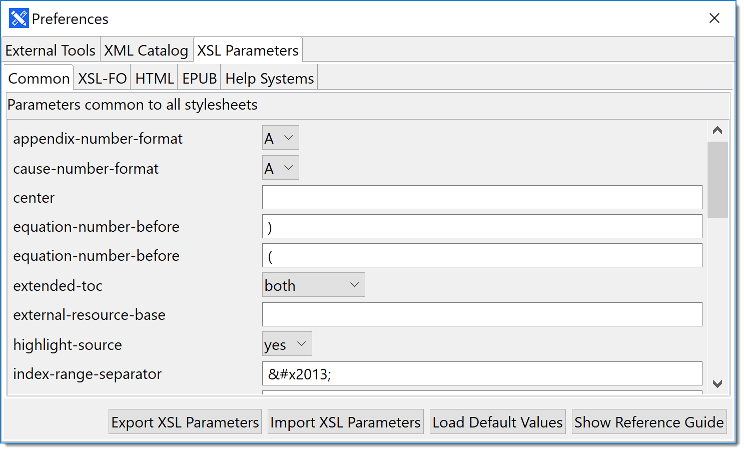

You can pass parameters to the XSL stylesheets shipped with Conversa to customize
the appearance of your publications.
Select the XSL Parameters tab in the Preferences dialog to adjust your stylesheets.

Use the Export XSL Parameters button to save the current set parameters
to an XML file and the Import XSL Parameters button to restore a set of
customized settings at any time.
The Load Default Values button restores the default values for all
parameters in all stylesheets. Use this option if you made a configuration mistake
or want to
reset all settings at once.
The Show Reference Guide button opens a separate window showing this
chapter in a Web Help version of this user guide.